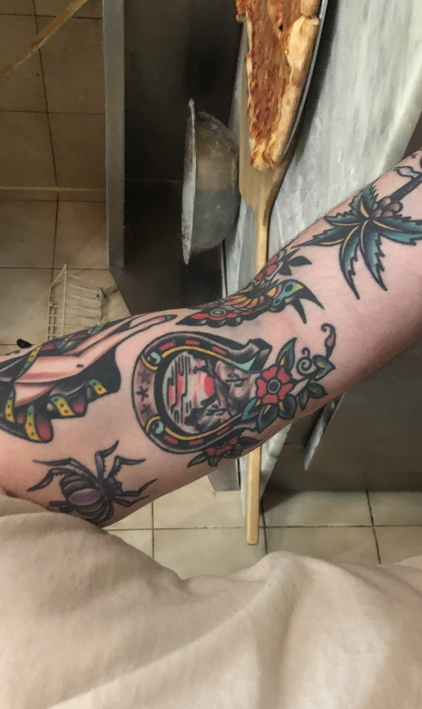

Shoe horse round
the horizon
TATTOO THREE
Name - Erik Gunderson
Tattoo and placement - Orchid on the right bicep
How old are you? - 33 years old.
How old were you when you got this tattoo? - 29 years old.
How many tattoos do you have in total? - Over 20.
How much did it cost you? - $800
Where did you get it done? - Smith street tattoo.
How long did it take? - 2 and a half hours.
How impulsive was it? - I’ve always put a lot of careful consideration into my tattoos.
Does this tattoo have a meaning behind it? - The shoe horse with the horizon setting on the desert between it represents the time I spent in the Wyoming as a child and my fondness for life in the mid-west.
Is it your own artwork? - No I live in fucking New York City, the Mecca of tattooing. There’s no way I would think I would know better than some of the best tattoo artist out there.
BACK BACK BACK BACK BACK BACK BACK BACK
